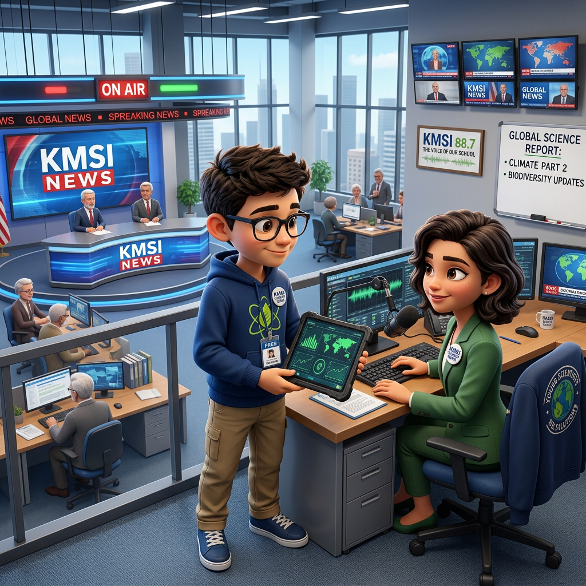

Habéis demostrado que sois capaces de investigar y analizar información.
Sin embargo, todavía no sois auténticos EcoPeriodistas.
Los ciudadanos necesitan comprender lo que habéis descubierto.
Para conseguirlo tendréis que aprender a redactar noticias y reportajes como hacen los periodistas profesionales."

Paso 1
Cada equipo recibe dos noticias:
🐝 Noticia sobre las abejas y los pesticidas.
🐟 Noticia sobre la trucha y la sequía.
Tarea
Lectura cooperativa.
Los alumnos utilizan un rotulador o una herramienta digital para destacar:
- Las partes
- Lo más importante.
- Los datos.
- Las opiniones.
Paso 2:
Material manipulativo
Cada grupo recibe tarjetas con los nombres, pero antes vemos las siguientes definiciones:
- Titular.
-
Encabezado principal que resume el hecho de forma clara y llamativa.
- Entradilla.
-
Primer párrafo que sintetiza los datos clave de la noticia.
- Desarrollo.
-
Párrafos posteriores con los detalles, causas, consecuencias y datos/opiniones.
- Fotografía.
-
Imagen conceptual o documental vinculada al suceso (las abejas o la trucha).
- Pie de foto.
-
Texto breve explicativo debajo de la imagen.
- Fuente.
-
Origen de la información o agencia de noticias que firma el texto.
Desafío
Localizar cada una de estas partes dentro de las noticias analizadas.
Cuando la encuentran colocan las tarjetas encima de la noticia.
Producto
Mapa visual de una noticia.
Anexo 1 Noticia abejas y Noticia truchas
Anexo 2 Tarjetas
Anexo 3. Noticia 1,
Anexo 4. Noticia 2
Anexo 5. Noticia 3
Anexo 6. Noticia 4
Lectura facilitada
¿Qué vamos a hacer?
Nos vamos a convertir en periodistas del medio ambiente.
Trabajaremos para la Agencia de Exploración Sostenible (AES).
Nuestro objetivo es aprender cómo se escribe una noticia.
Al final, haremos un Mapa Visual de una Noticia para usarlo de guía.
📝 Pasos para trabajar en clase
Paso 1: Leer y analizar en grupo
Nos juntaremos en grupos de 3 o 4 compañeros.
Leeremos una noticia real en papel o en la pantalla.
Usaremos colores o rotuladores para señalar:
Las partes de la noticia.
La información más importante.
Los datos reales (hechos).
Las opiniones de las personas.
Paso 2: Usar las tarjetas de las partes de la noticia
Colocaremos unas tarjetas encima de la noticia para señalar cada parte:
Titular: Es el título. Cuenta lo más importante con pocas palabras.
Entradilla: Es el primer párrafo. Resume la noticia.
Cuerpo: Son los párrafos del medio. Explican los detalles, las causas y las consecuencias.
Fotografía: Es la imagen que acompaña a la noticia.
Pie de foto: Es el texto corto que explica la imagen.
Fuente: Dice quién ha escrito o investigado la información.
❓ Preguntas para entender la noticia
En grupo, responderemos a estas 5 preguntas sobre la noticia:
¿Qué ha pasado?
¿A quién le afecta?
¿Por qué ha pasado?
¿Qué consecuencias tiene?
¿Qué soluciones proponen?
Audio
Orientaciones metodológicas
Objetivo de la actividad: Deconstruir e identificar la estructura formal de una noticia periodística (partes, datos y opiniones) utilizando técnicas de lectura cooperativa y material manipulativo para diseñar un mapa visual de referencia.
Agrupamiento: Parejas.
Pautas de Ejecución en el Aula
Gestión del encargo: El alumnado recibe el desafío de la AES para transformarse en redactores. Su cometido es analizar noticias reales para comprender cómo se estructura la información antes de redactar sus propios textos.
Mecánica de resolución:
Lectura cooperativa y subrayado (Paso 1): Leer los textos de los anexos empezando por noticia de las abejas y noticia de las truchas. Con rotuladores o herramientas digitales de distintos colores, diferenciar:
Estructura del texto.
- Ideas clave / Lo más importante.
- Datos objetivos y cuantitativos.
- Opiniones o valoraciones de expertos.
- Análisis manipulativo (Paso 2): Identificar la ubicación exacta de los elementos periodísticos usando las tarjetas del Anexo 2 (Titular, Entradilla, Desarrollo, Fotografía, Pie de foto,
- Fuente) y superponerlas sobre la noticia.
- Elaboración del Producto Final: Crear un Mapa visual de una noticia que condense las partes aprendidas y sirva como guía de maquetación para la redacción periodística.
Criterios clave:
Localización precisa de las 6 partes de la estructura periodística en el texto físico/digital.
Discriminación correcta entre datos objetivos e información basada en opiniones.
Claridad, síntesis y calidad del Mapa Visual generado por el equipo.